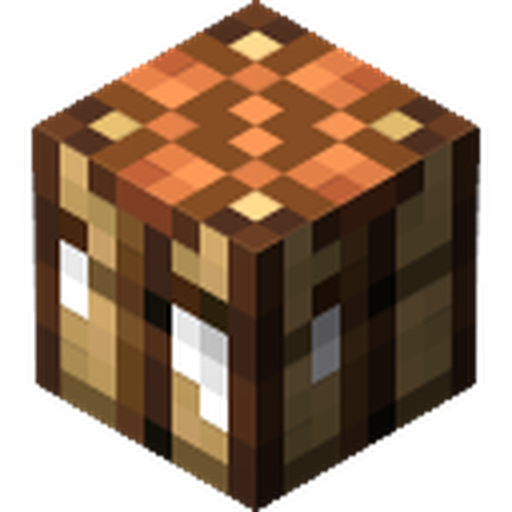

SKYWARE LAUNCHER RELOADEDSign in, and the launcher takes it from there - installs the modpack, sorts out Java, and keeps itself patched. One button, every time.
Everything you'd actually want to change lives in one place - the rest is handled for you.
In active development - this list moves fast.